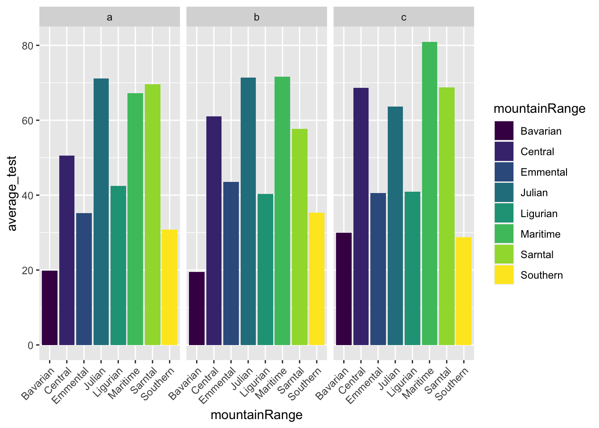
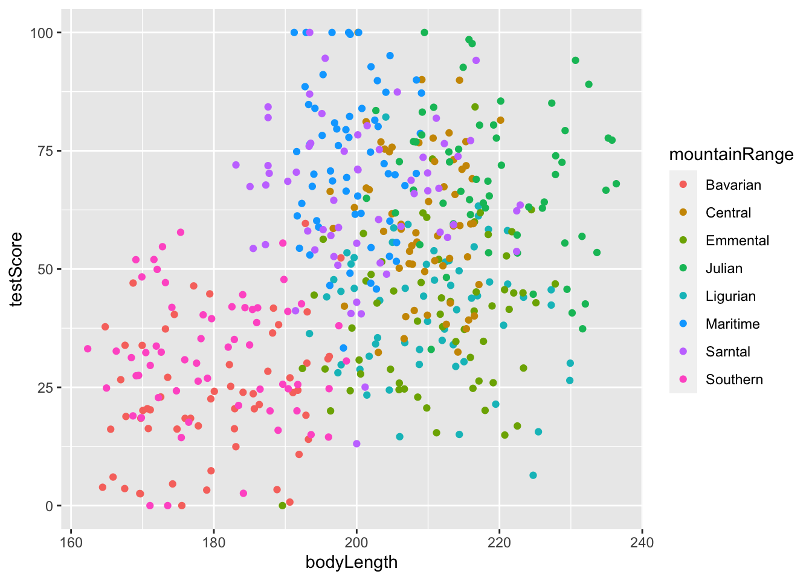
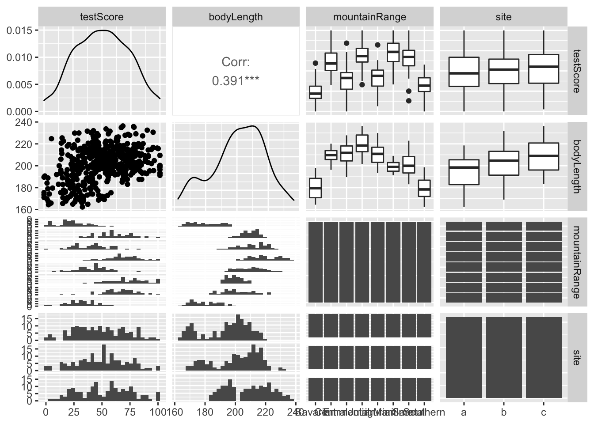
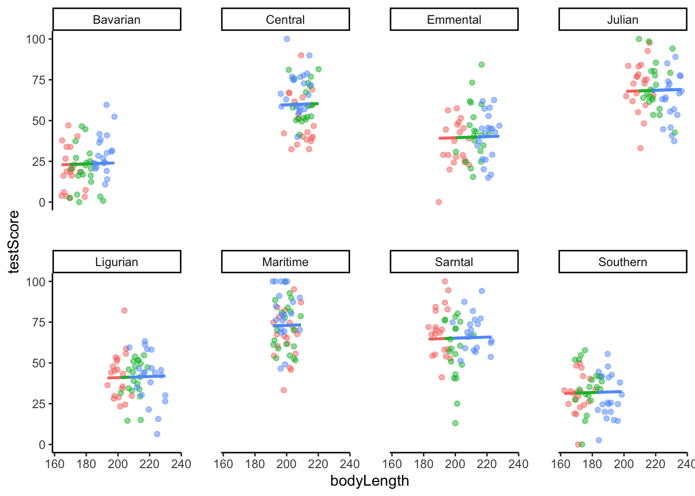

Mixed models workshop - University of Guelph R Users group
Published
March 17, 2023
What are mixed models and why should we use them?
Mixed effects models are an extension of linear models that include a combination of fixed and random effects (Bolker et al. 2009; Harrison et al. 2018).
Mixed effects models and the introduction of random effects have a number of key (non-mutually exclusive) benefits (adapted from Harrison et al. 2018):
Complex datasets with built in non-independence: Biological datasets are often highly structured, containing clusters of non-independent observational units that are hierarchical in nature, and mixed models allow us to explicitly model the non-independence in such data.
Improved inference: Explicit modelling of the random effects structure will improve inference about fixed effects, depending on which level of the system’s hierarchy is being manipulated.
Grouping variables: Random effects typically represent some grouping variable and allow the estimation of variance in the response variable within and among these groups, which reduces the probability of false positives (Type I error rates) and false negatives (Type II error rates).
Mixed model resources:
For more details, code, and more information on using mixed effects models see the following online resources:
Data have inherent non-independence through nested variables
One or more variable are grouped and (as the user) we want to account for variance within and among groups, but not we are not interested in the statistical effect of that grouped variable on our response variable.
Example data
We will use the dragon data, which includes data on body length and test score for dragons from 8 mountain ranges. Within each mountain range there are three sites (a, b, and c).
We will follow prior examples using these data from Elise Gallois.
Explore the data
## load dragon data load("dragons.RData")## convert to tibble and check out the columnsdragons <-as_tibble(dragons)## remove X column and dragons <- dragons %>%select(-X) ## view head of dataset head(dragons)
# A tibble: 6 × 4
testScore bodyLength mountainRange site
<dbl> <dbl> <fct> <fct>
1 16.1 166. Bavarian a
2 33.9 168. Bavarian a
3 6.04 166. Bavarian a
4 18.8 168. Bavarian a
5 33.9 170. Bavarian a
6 47.0 169. Bavarian a
## plot differences in mean test scores across mountain ranges and sites dragons %>%select(mountainRange, site, testScore) %>%filter(!is.na(testScore)) %>%group_by(mountainRange, site) %>%summarise(average_test =mean(testScore)) %>%ggplot(aes(x = mountainRange, y = average_test, fill = mountainRange)) +geom_col() +scale_fill_viridis_d() +theme(axis.text.x =element_text(hjust =1, angle =45)) +facet_wrap(~ site)

## plot relationship between test score and body length by mountain rangedragons %>%ggplot(aes(x = bodyLength, y = testScore, color = mountainRange)) +geom_point()

## check relationships between all pairwise combinations of variablesdragons %>% GGally::ggpairs()

Considering our exploratory analysis
It looks like test score varies between mountain ranges and it also looks like the relationship between test score and body length varies between mountain ranges. If we are interested in the biological effect of mountain range on test score (maybe mountain range is a proxy for food availability), we would consider using linear models. If we aren’t really interested in the biological effect of mountain range on the test score or on the relationship between test score and body length, we would consider using linear mixed models.
Model test score against body length and mountain range using linear model
model1 <-lm(testScore ~ bodyLength + mountainRange, data = dragons)summary(model1)
Our interpretation of this model is that body length does not affect test score, though there are differences in test score across mountain ranges. If we are not interested in testing for differences between mountan rages, we can used mixed models to assess whether body length affects test scores by controlling for the variation between mountain ranges.
Upgrade to mixed model
Key difference between fixed and random effects
Fixed effects are variables that we expect will have a biological effect on our response variable. These can be continuous or categorical. In our case, we are interested in the effect of body length on test score.
Random effects are grouped factors for which we are trying to control (i.e. those we don’t want to test for biological or statistical effects). Random effects MUST be categorical and you can’t force them to be continuous. A general rule of thumb about random effects is that there must be at least 5 levels within the variable (e.g. there are 8 mountain ranges). Fewer than 5 levels and this variable should either be excluded or considered a fixed effect. Estimating variance on <5 data points is very imprecise and although it is technically possible (R will give an output), we have limited confidence in these estimates.
Fitting a mixed model
We know that our response variable (test score) has unexplained residual variation associated with the mountain range variable. By incorporating mountain range as a random effect, we are modeling the unexplained variation through variance partitioning.
Here we use the syntax (1|mountainRage) to incorporate mountain range as a random effect
model2 <-lmer(testScore ~ bodyLength + (1|mountainRange), data = dragons)summary(model2)
Linear mixed model fit by REML ['lmerMod']
Formula: testScore ~ bodyLength + (1 | mountainRange)
Data: dragons
REML criterion at convergence: 3991.2
Scaled residuals:
Min 1Q Median 3Q Max
-3.4815 -0.6513 0.0066 0.6685 2.9583
Random effects:
Groups Name Variance Std.Dev.
mountainRange (Intercept) 339.7 18.43
Residual 223.8 14.96
Number of obs: 480, groups: mountainRange, 8
Fixed effects:
Estimate Std. Error t value
(Intercept) 43.70938 17.13489 2.551
bodyLength 0.03316 0.07865 0.422
Correlation of Fixed Effects:
(Intr)
bodyLength -0.924
Where’s my p-value??
You might wonde why the lmer function from the lme4 R package does not provide p-values. Douglas Bates (the author of lme4) provides a [summary] herehttps://stat.ethz.ch/pipermail/r-help/2006-May/094765.html of why the function does not output p-values. TL;DR – Bates disagrees with how p-values are calculated for mixed models in SAS (circa 2006!) and has chosen not to translate the underlying math used in SAS to calculate p-values in R.
Nevertheless, regardless of Bates, there are ways to pull p-values for your fixed effects from the lmer function. Here is a good option:
## Extract full model summary (including p-values for each fixed effect):jtools::summ(model2)
Registered S3 methods overwritten by 'broom':
method from
tidy.glht jtools
tidy.summary.glht jtools
Observations
480
Dependent variable
testScore
Type
Mixed effects linear regression
AIC
3999.20
BIC
4015.90
Pseudo-R² (fixed effects)
0.00
Pseudo-R² (total)
0.60
Fixed Effects
Est.
S.E.
t val.
d.f.
p
(Intercept)
43.71
17.13
2.55
177.47
0.01
bodyLength
0.03
0.08
0.42
472.67
0.67
p values calculated using Satterthwaite d.f.
Random Effects
Group
Parameter
Std. Dev.
mountainRange
(Intercept)
18.43
Residual
14.96
Grouping Variables
Group
# groups
ICC
mountainRange
8
0.60
If you don’t want to mess around with these extra steps, you can use the nlme R package (function is lme) – this is the package used by Zuur et al in their books
## mixed model using lme (note, syntax for random effects is slightly different than lme4)model3 <-lme(testScore ~ bodyLength, random =~1|mountainRange, data = dragons)summary(model3)
Linear mixed-effects model fit by REML
Data: dragons
AIC BIC logLik
3999.203 4015.881 -1995.601
Random effects:
Formula: ~1 | mountainRange
(Intercept) Residual
StdDev: 18.43016 14.96042
Fixed effects: testScore ~ bodyLength
Value Std.Error DF t-value p-value
(Intercept) 43.70938 17.134887 471 2.5508998 0.0111
bodyLength 0.03316 0.078647 471 0.4216961 0.6734
Correlation:
(Intr)
bodyLength -0.924
Standardized Within-Group Residuals:
Min Q1 Med Q3 Max
-3.481523063 -0.651292614 0.006580979 0.668525328 2.958262653
Number of Observations: 480
Number of Groups: 8
Interpretation of mixed model
Once mountain range is included as a random effect, we can see that body length doesn’t actually explain variation in test scores. If we take a look at the fixed effect estimate for body length from the linear ( 0.01267 se +/- 0.07974) and mixed effects models (0.03316 se +/- 0.07865), they are very similar and both have standard errors that overlap zero.
What is explaining variance in test score? The answer lies in variance partitioning of random effects.
In the Random Effects section of the summary for model 2. Note, mountain range = 339.7 and residual = 223.8. To partition the variance in test score accounted for by mountain range we can calculate:
339.7/(339.7+223.8)
[1] 0.6028394
We can interpret this outcome as the differences between mountain ranges accounts for ~60% of the variance in test score (after we account for fixed effects). The other ~40% of the variance is attributable to residual (or unknown) sources of error.
Incorporating additional random effects
Depending on the structure of our data, we can incorporate additional random effects, which can be considered as nested random effect or crossed random effects.
Nested random effects
Nested random effects are (in my opinion) easier to interpret. Nested = hierarchical and these are considered a set of variables that can be within each other. I often like to think of nested random effects as sampling through (restricted) space.
For example: observing n = 15 individual organisms in each of n = 10 different populations (N = 150 data points). If individuals are assigned to a population because they are either spatially or temporally restricted from being in another population, we would nest individual identity within population. We can therefore account for both individual and population using nested random effects. The syntax will look like this:
## generate fake dataset for nested random effectsdf <-tibble(A =runif(150), B =runif(150),ID =rep(c("A", "B", "C", "D", "E", "F", "G", "H", "I", "J","H", "I", "K", "L", "M"), times =10),population =rep(c("1", "2", "3", "4", "5", "6", "7", "8", "9", "10"), each =15))head(df)
# A tibble: 6 × 4
A B ID population
<dbl> <dbl> <chr> <chr>
1 0.266 0.747 A 1
2 0.0115 0.981 B 1
3 0.990 0.901 C 1
4 0.495 0.875 D 1
5 0.166 0.807 E 1
6 0.0748 0.977 F 1
## mixed model syntaxmod1 <-lmer(A ~ B + (1| population/ID), data = df)
Crossed random effects
Crossed random effects are are more challenging to assign and interpret (in my opinion). I like to think of crossed random effects as sampling through time. Crossed effects can be assigned when subjets of one variable (e.g. individual ID) have experienced some, or all, of the levels in the other variable (e.g. season). Crossed effects can be full (if all IDs are observed in all seasons) or partial (if some IDs are observed in some seasons).
For example: If we observe n = 15 individual organisms in each of n = 12 different (sub)seasons (N = 180 data points). Individuals are assigned to a season because they were observed in a season. We can therefore account for both individual and season using crossed random effects. The syntax will look like this:
# A tibble: 6 × 4
A B ID season
<dbl> <dbl> <chr> <chr>
1 0.693 0.351 A early winter
2 0.761 0.442 B early winter
3 0.128 0.0807 C early winter
4 0.674 0.201 D early winter
5 0.472 0.565 E early winter
6 0.233 0.415 F early winter
## mixed model syntaxmod1 <-lmer(A ~ B + (1| season) + (1| ID), data = df)
boundary (singular) fit: see help('isSingular')
Does the dragon data need crossed or nested random effects?
Test scores were collected at 3 sites within each of the 8 mountain ranges. Given the rule of thumb where spatial = nested and temporal = crossed, my suggestion would be to apply a nested random effect structure where site is nested within mountain range.
## mixed model with mountain range and site as nested random effectsmodel4 <-lmer(testScore ~ bodyLength + (1|mountainRange/site), data = dragons)summary(model4)
Linear mixed model fit by REML ['lmerMod']
Formula: testScore ~ bodyLength + (1 | mountainRange/site)
Data: dragons
REML criterion at convergence: 3976
Scaled residuals:
Min 1Q Median 3Q Max
-3.2425 -0.6752 -0.0117 0.6974 2.8812
Random effects:
Groups Name Variance Std.Dev.
site:mountainRange (Intercept) 23.09 4.805
mountainRange (Intercept) 327.56 18.099
Residual 208.58 14.442
Number of obs: 480, groups: site:mountainRange, 24; mountainRange, 8
Fixed effects:
Estimate Std. Error t value
(Intercept) 40.06668 21.86373 1.833
bodyLength 0.05126 0.10368 0.494
Correlation of Fixed Effects:
(Intr)
bodyLength -0.955
#Now let's take a look at the relationship between test score and body length at each mountain range by site combination: ggplot(dragons, aes(x = bodyLength, y = testScore, colour = site)) +facet_wrap(~mountainRange, nrow =2) +geom_point(alpha =0.5) +theme_classic() +geom_line(data =cbind(dragons, pred =predict(model3)), aes(y = pred), size =1) +theme(legend.position ="none",panel.spacing =unit(2, "lines"))

Random slopes
Very possible! Let’s talk about this next time…
Generalized linear mixed models
Can accommodate non-normal distributions (e.g. Poisson or binomial)
Model selection
It’s possible, but there are some tricks for choosing random effects.
[glmmTMB]https://github.com/glmmTMB/glmmTMB is great for mixed-effects models with zero-inflation, a dispersion model, and/or some alternative var-cov structures for the random effects. Syntax is similar to lme4.